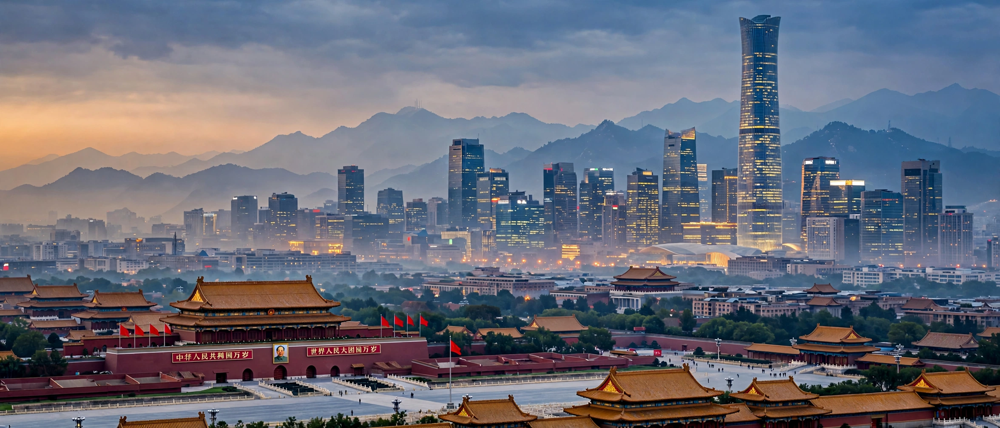

Beijing (Chinese: 北京; pinyin: Běijīng), alternatively romanized as Peking, is the capital of the People's Republic of China. With more than 21 million residents in an administrative area of 16,410.5 km², it is the world's most populous national capital and China's second-largest city after Shanghai. It is located in northern China and is governed as a municipality under the direct administration of the State Council, with sixteen urban, suburban, and rural districts.
| Beijing | |
|---|---|
 | |
| Country | China |
| Area | 16,410.5 km² |
| Population (2020) | 21,893,095 |
| Elevation | 43.5 m |
| Time zone | UTC+8 (China Standard) |
| Postal code | 100000–102629 |
Beijing is a global city and one of the world's leading centres for culture, diplomacy, politics, business and economics, education, language, and science and technology. The world's first megacity in population and GDP, it hosts the second-busiest airport in the world by passenger traffic. It is home to the headquarters of most of China's largest state-owned companies and houses the largest number of Fortune Global 500 companies in the world, as well as the world's four largest financial institutions by total assets.
Human settlement in the area dates back at least 3,000 years, and the area was inhabited by Peking Man some 230,000 to 250,000 years ago. As a city, Beijing has been the political centre of the country for most of the past eight centuries, first becoming China's political centre during the Jin dynasty. The Ming dynasty built much of the city's famous architecture, including the Forbidden City, after Emperor Yongle moved the capital there in 1420. The Qing dynasty maintained Beijing as capital until 1912.
After the founding of the People's Republic of China in 1949, Beijing hosted the proclamation ceremony at Tiananmen. The city hosted the 2008 Summer Olympics and the 2022 Winter Olympics, becoming the first city ever to host both Games.
Beijing lies at the northern tip of the roughly triangular North China Plain, which opens to the south and east of the city. Mountains to the north, northwest and west shield the city and northern China's agricultural heartland from the encroaching desert steppes. The northwestern mountainous parts of the municipality are dominated by the Jundu Mountains, while the western hills form the Xishan range.
The city's historic centre contains the Forbidden City, the vast palace complex of the Ming and Qing dynasties; the adjacent Tiananmen Square; the Temple of Heaven; the Summer Palace; and sections of the Great Wall of China, including Badaling. Modern landmarks include the Bird's Nest (Beijing National Stadium) and the CCTV Headquarters.
From Wikipedia, the free encyclopedia (recreated from memory).